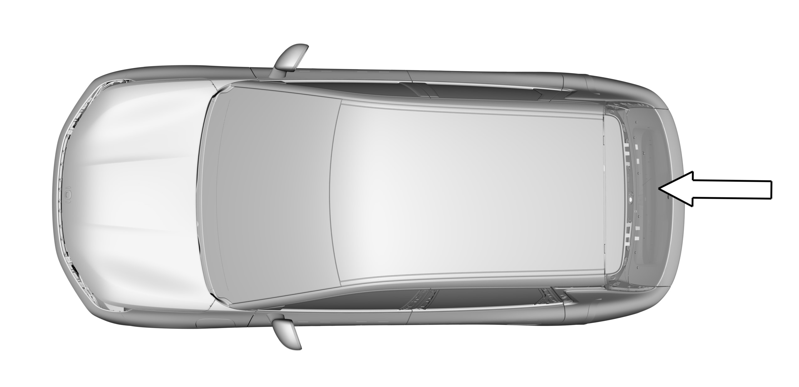
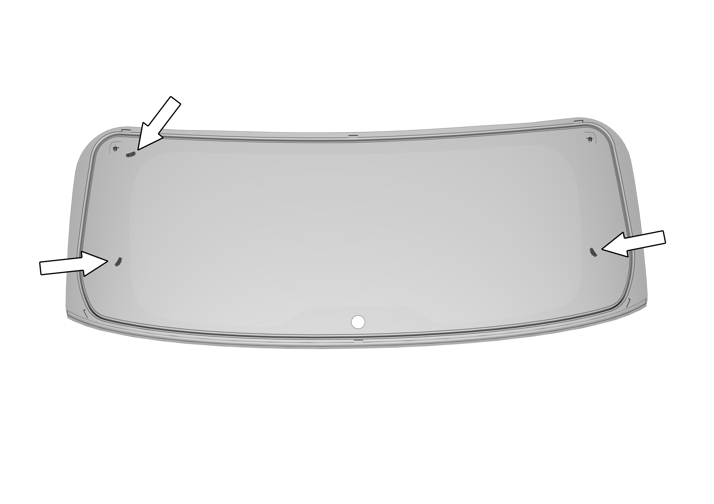

Снятие
1. Снять наружный спойлер, боковые декоративные панели, а также рычаг стеклоочистителя;
2. Открыть дверь задка;
3. Снять облицовочную панель двери задка;
4. Отсоединить разъемы жгутов проводов обогревателя стекла с обеих сторон и усилителя антенны;
5. С помощью инструмента для удаления клея для ветровых стекол демонтировать заднее стекло;

6. При содействии других специалистов с помощью стеклоосадителей (присосок для стекла) снять заднее стекло
Установка
1. Очистить остатки клея внутри желоба заднего стекла;
2. Проверить металлический лист на наличие повреждений, ржавчины или посторонних материалов и других веществ, способных вызвать повреждение стекла;

3. Установить температуру термофена на 25 ℃ для удаления влаги из желоба заднего стекла и клеевой полосы стекла;
4. Подготовить полиуретановый (PU) клей, стекло и другие принадлежности;
5. С помощью клеевого пистолета равномерно выдавить клей для вклеивания по линии нанесения клея на заднем стекле в виде треугольника шириной 7 mm и высотой 13 mm;
6. При содействии других специалистов с помощью присосок для стекла установить заднее стекло;
7. Если температура окружающей среды падает ниже 10 ℃, с помощью термофена выполнить нагрев (25 ℃) на расстоянии около 50 mm от поверхности в течение 15 min (внутри или снаружи автомобиля);
8. После завершения установки усилить проверку герметичности, выполнить проверку дождеванием и т. д., во время проверки уделить внимание защитной обработке салона автомобиля
9. Подключить разъемы жгутов проводов обогревателя стекла с обеих сторон и усилителя антенны;
10. Установить облицовочную панель двери задка;
11. Установить наружный спойлер, боковые декоративные панели и рычаг стеклоочистителя.